Which process group compares progress with the plan and triggers re-planning?
- That does the work.
- That ends it.
- It wraps around planning and executing.
- That starts the phase or project.
How a team chooses the way it builds software, in four parts. Methodology concepts: process vs. process model vs. methodology, what a methodology addresses, its ten elements, and the two life cycles of an IT project (PLC for project requirements, SDLC for product requirements). Software development processes: plan-driven waterfall (when it fits and how it fails) vs. evolutionary/iterative development with its four phases (inception, elaboration, construction, transition). Agile: the 4 values and 12 principles, incremental development, XP practices and Scrum (roles, artifacts, sprints, backlog). DevOps: closing the gap between development and operations, and how project management adapts to a CI/CD pipeline.
The exam angle is choosing an approach for a situation and justifying it: match stable, known requirements to waterfall and evolving, uncertain ones to iterative or agile, and say why.
Process = the activities; process model (life cycle) = an abstract shape like waterfall or iterative; methodology = the concrete “how we work around here”.
The project life cycle targets project requirements (time, cost); the SDLC targets product requirements. You need both, integrated.
Clear stable requirements, proven technology, low complexity, adequate time. Fails late: late integration, late risk resolution.
Unclear or evolving requirements, new technology, high complexity, short schedule. Phases: inception → elaboration (most critical) → construction → transition.
Individuals over process, working software over documents, collaboration over contracts, responding to change over the plan. Waterfall fixes scope; agile fixes time and cost.
XP prescribes engineering practices (TDD, CI, refactoring, pairing); Scrum is a planning framework (backlog, sprints, Product Owner, ScrumMaster) with no technical practices.
Midterm 251 (both versions) asked when an iterative approach is most beneficial (MCQ 6) and, in the Edugate case, whether to recommend Agile, Waterfall or Hybrid and why (Case Q2, from the instructor’s key: Agile/Scrum because requirements evolve). Final 251 Q1.4 asked for a PM tool or technique for a complex software project; Final 242 Q1.2 needs the milestone definition from slide 10.
Every original slide is shown unchanged. Yellow marks on a slide point to a numbered note: hover or tap a mark to jump to its note, and hover a note to see its marks. Questions tagged Past exam appeared on a real paper; Prediction questions are likely angles, not confirmed. Pick an answer to each question: a wrong pick tells you why it is wrong, so you can try again.
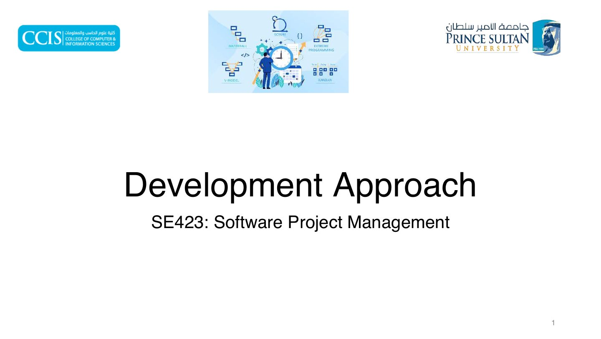
The deck has four parts: methodology concepts, software development processes (waterfall vs. iterative), agile project management (XP and Scrum), and DevOps. The middle two carry most of the exam questions.
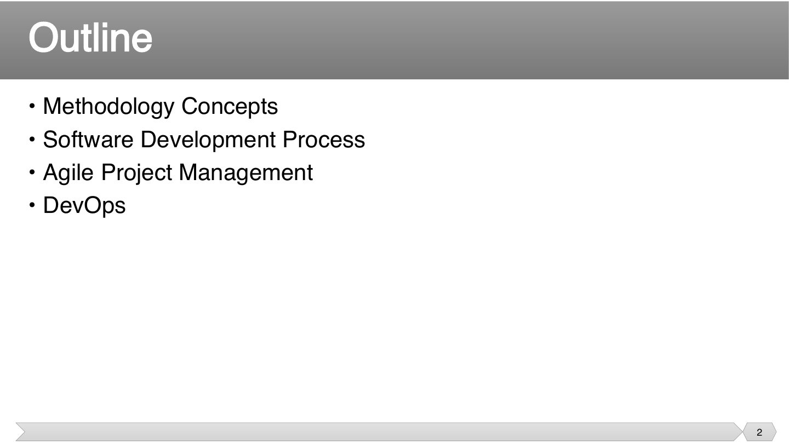
Methodology concepts: the vocabulary (process, model, methodology) and what a methodology contains.
Software development process: plan-driven waterfall vs. evolutionary/iterative.
DevOps: joining development and operations, and what that means for the PM.
Section divider: Methodology Concepts.
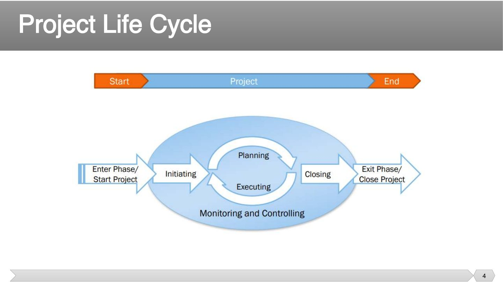
The project life cycle as process groups. Initiating starts the phase or project (charter, stakeholders).
Planning and executing loop around each other, wrapped by monitoring and controlling, which compares progress with the plan and triggers re-planning.
Closing ends the phase or project (acceptance, lessons learned). Every development approach in this deck still sits inside this cycle.
Which process group compares progress with the plan and triggers re-planning?
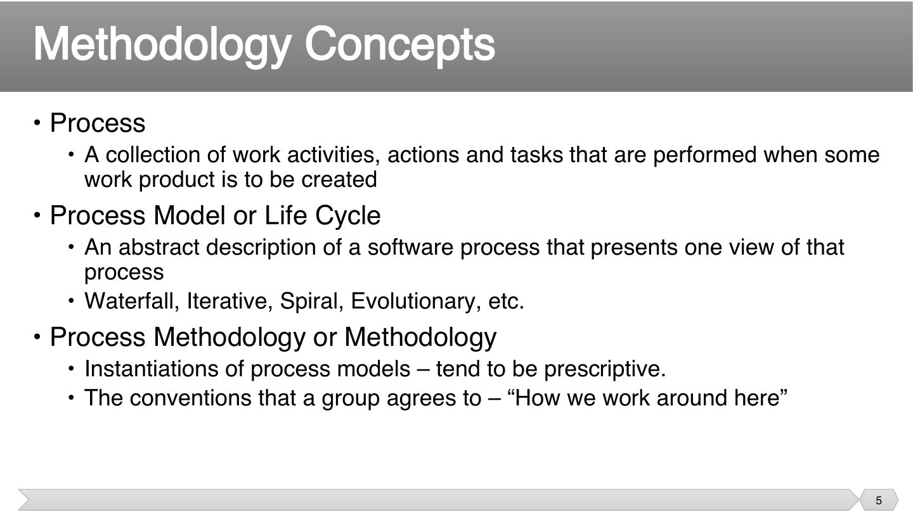
A process is what actually gets done to produce something. Writing and reviewing a requirements document is a process: it’s the real work, not a description of it.
A model is a general shape, like a recipe type: “iterative” tells you the idea without saying how your company does it. That’s why it’s called an abstract description.
A methodology is the model made specific, with your team’s rules, roles and habits. So Scrum at your company is a methodology, while “iterative” is the model behind it.
Waterfall, iterative and spiral are examples of:
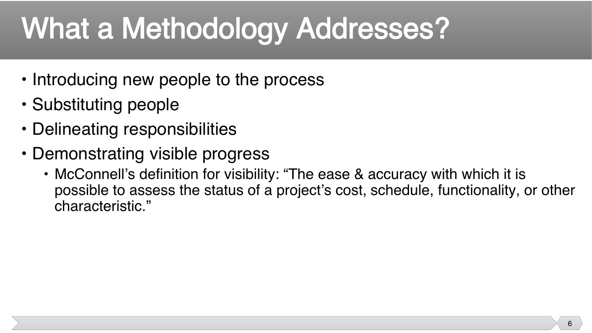
If a new hire can’t find out how things work, they’re slow for months. A methodology writes down how work is done, so new people ramp up faster, and a replacement can step in.
Managers need to know how a project is doing without guessing. Visibility means status is easy to see and accurate, so problems get noticed while they can still be fixed.
A new developer learns how the team works from its documented method. What does this help with?
What does McConnell mean by visibility?
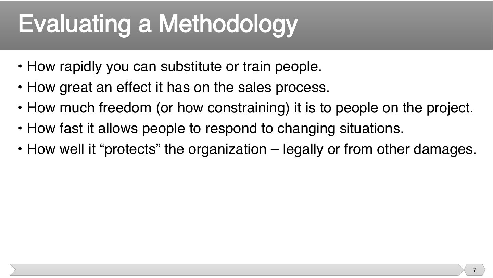
If one person leaves and work stops, the method is failing you. A good one makes roles clear enough that you can substitute someone without losing weeks…
…its effect on the sales process (can you show clients a credible way of working?)…
Too many rules slow people down and frustrate them, while too few cause chaos. This criterion asks you to judge that balance, or how much freedom people have…
If each change means a long approval process, you can’t react when something shifts. How well you respond to change is one of the main differences between methods…
Records of who approved what help if a dispute goes to court. A method’s paperwork can be annoying day to day and valuable when it protects the organization.
Documented approvals later help a company in a legal dispute. Which criterion is this?
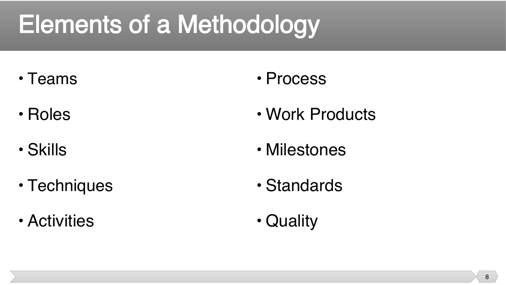
You don’t need to memorize these as one list. The left set is about people: who does the work and what they know. The ten elements are easier to recall in those groups.
This set is about the work itself: what order it’s done in, what comes out of it, and what counts as good enough. Slides 10–13 define each.
Which is NOT one of the elements of a methodology?
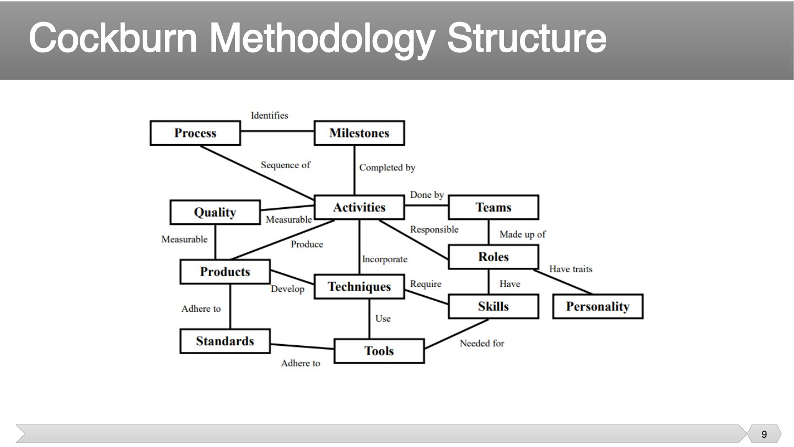
Read the diagram as sentences: the process is a sequence of activities, completed by milestones; activities produce products and incorporate techniques.
Teams are made of roles; roles have skills and are matched to personalities; techniques require skills and use tools.
According to the Cockburn diagram, what do activities produce?
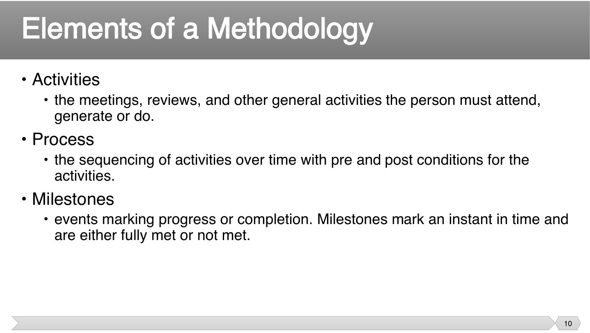
Think of your calendar: reviews and meetings count as activities in the methodology too, since they take real time and need planning.
Activities alone don’t tell you the order. Process says what must be finished before something can start, such as code review before merging.
A milestone isn’t work that takes time. It’s a moment you pass or don’t. That’s why “60% met” makes no sense: either the design was approved today or it wasn’t.
Explain what is a Gantt chart and describe its significance in planning and tracking project activities. In your answer, define the terms milestone and dependency, and provide one example of each as they would appear in a Gantt chart.
A Gantt chart is a bar chart with activities down the side and a time scale across, where each bar shows an activity’s start, finish and duration; it makes the schedule easy to plan and to track, because actual progress is shaded against the planned bars. A milestone is a significant event with zero duration, either fully met or not, shown as a diamond, e.g. “Requirements signed off”. A dependency is a logical relationship where one activity can’t start (or finish) until another does, shown as an arrow, e.g. “Coding” can’t start until “Design approved” finishes.
A milestone can be 60% met.
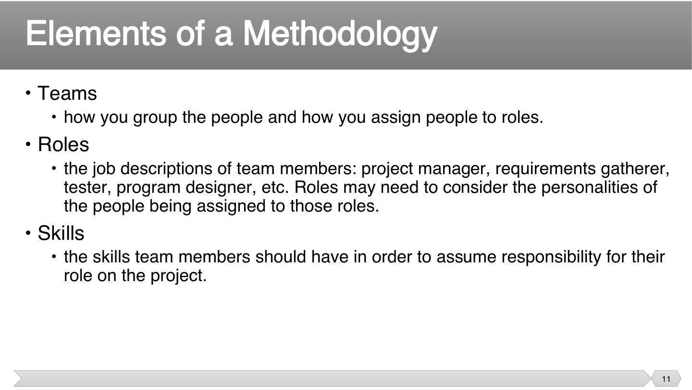
Who works with whom affects speed and quality. Putting testers with developers gives different results from keeping them apart, so teams are a real design choice.
A role is a job to be done, not a person, and one person may have several. Matching roles to personalities matters because someone who hates conflict may struggle as the negotiator.
Giving someone a role they can’t do helps nobody. Listing skills per role tells you who needs training and who to hire.
“How you group people and assign them to roles” defines:
Role assignment may need to consider people’s personalities.
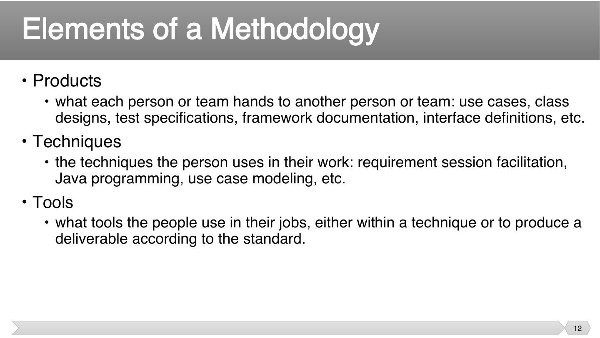
Ask “what does the next person need from me?”. The tester needs test specifications, and that hand-over is a product. If it’s poor, the next person’s work suffers.
Two people can make the same product differently. Techniques are how the work is done, like modeling use cases, so a methodology can prescribe skills rather than only results.
A technique is the method, and a tool is what helps you apply it. Use case modeling is a technique, while the diagram software is a tool.
Use cases handed from an analyst to a designer are an example of:
Use case modeling is an example of a:
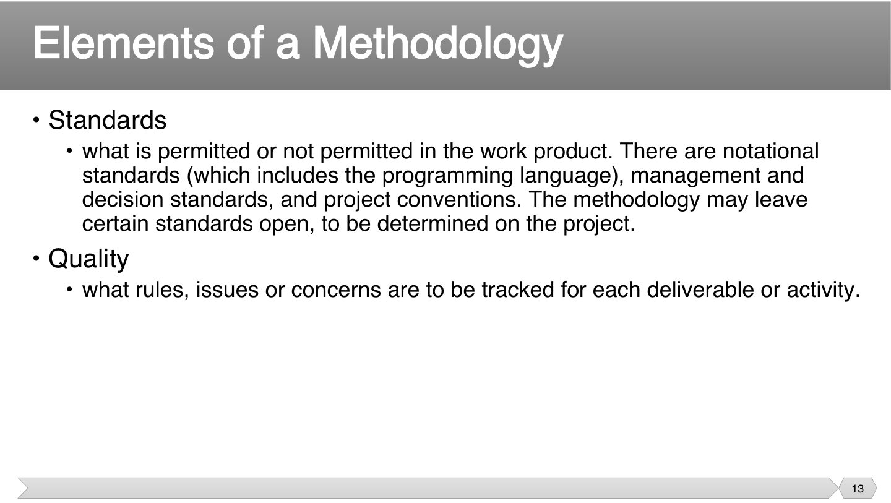
Why have rules on the work product? Everybody can read and combine each other’s work more easily. Notational standards are about how things are written, like which language or diagram style. Leaving some open allows projects to decide for themselves.
Quality: which rules, issues or concerns are tracked for each deliverable or activity (e.g. code review required, test coverage).
A team requires all code to be in Java. Which type of standard is this?
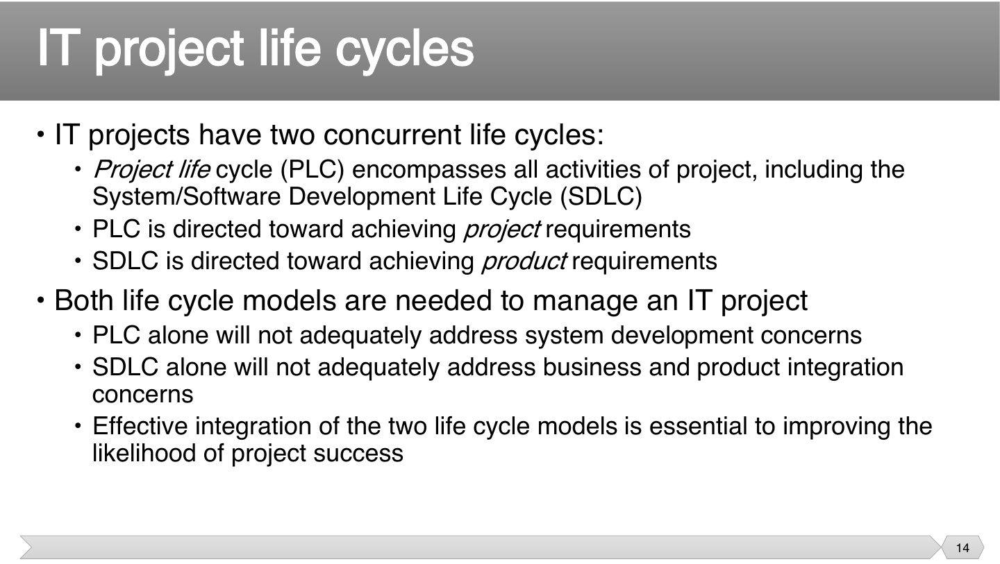
A software project is more than coding: someone also handles contracts, budgets and approvals. So the PLC contains the development work, the SDLC, plus everything around it.
The PLC targets project requirements (scope, time, cost, approvals); the SDLC targets product requirements (features, quality). A common trap: don’t swap them.
A perfect product can still fail if nobody arranged the budget, and a well-run project can still build broken software. So you need both, because neither is enough alone.
The two must line up. A PM who plans a release date without knowing how development works will set dates that can’t be met, which is why integrating them matters.
The SDLC is directed toward achieving:
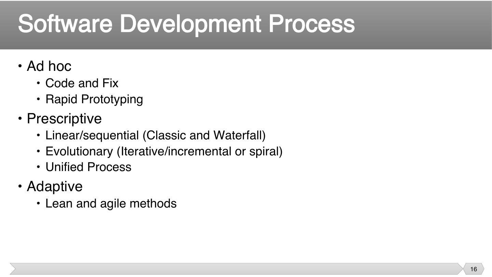
“We just start coding and fix things” is how many small projects begin. Ad hoc can work for tiny tools, but it falls apart as projects grow, since nothing is defined.
These set out in advance what to do and when. Prescriptive doesn’t have to mean waterfall: evolutionary approaches are prescriptive too, and it’s the defined process that matters.
Rather than a detailed plan up front, these expect to change course. Adaptive methods like lean and agile treat what you learn as the main input for planning.
Code and fix belongs to which family?
Spiral belongs to which family?
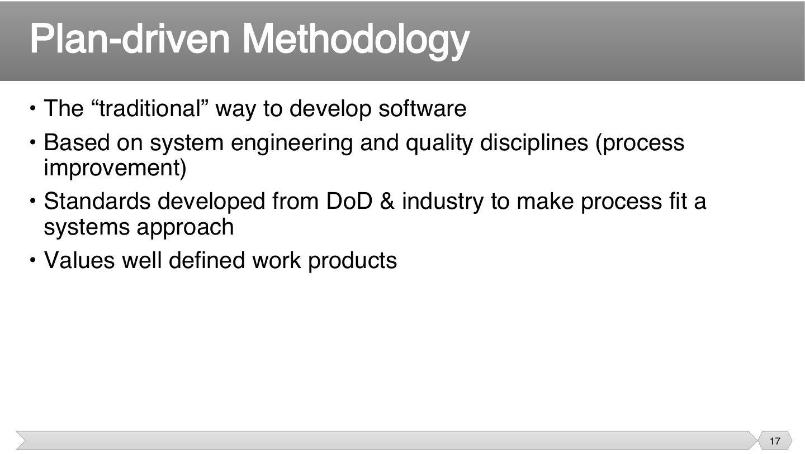
Traditional doesn’t mean bad. Plan-driven comes from fields where you plan carefully because rework is very expensive…
…such as building aircraft. It borrows from those fields’ way of thinking, which is why it’s rigorous: define it, measure it and improve it…
…and when you’re a big customer, like the US Department of Defense, you want every contractor working the same way, so you can compare and control them…
…which is why it values documents. They let different teams, even different companies, hand work to each other, and they leave a record to check.
What does plan-driven development value?
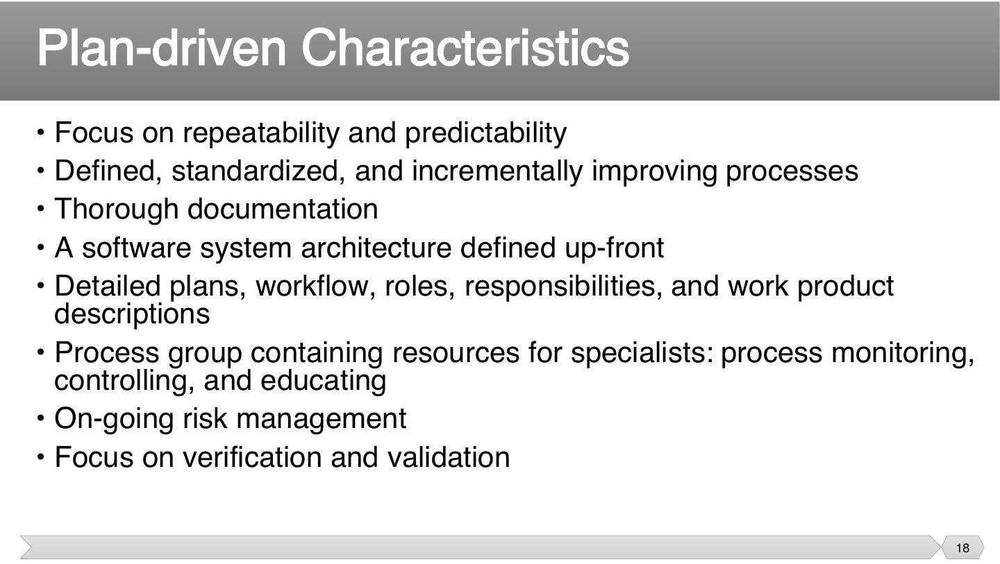
If you run the same process twice, you want similar results. That’s what repeatability is for: being able to predict cost and date, which is exactly what big contracts demand.
Writing everything down lets others take over and lets you check against it. An architecture up front avoids expensive redesign, provided requirements don’t change much.
Everyone knows exactly what’s expected, which is valuable on very large teams, though it’s heavy for small ones. A process group exists just to keep that machine running.
Because you’ve committed early, surprises are costly, so risk gets watched throughout. Verification asks “did we build it right?” and validation asks “did we build the right thing?”.
What is the main aim of plan-driven processes?
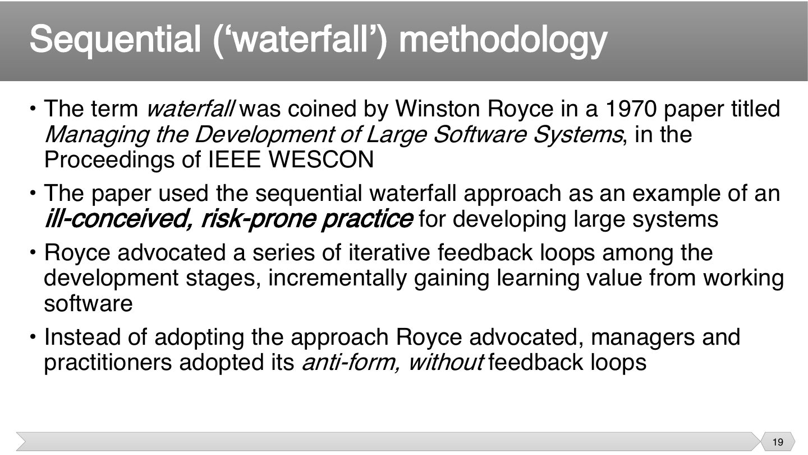
It’s an irony worth remembering: the name most people use comes from a paper that warned against it. Royce is the only historical name you need here.
He didn’t think testing only at the end was sensible for big systems. By then, fixing a design flaw is very expensive. So he called the pure version risk-prone.
His idea was to go back and improve earlier stages using what you learn. So feedback loops are the part of his paper people forgot.
Industry adopted its anti-form, the version without feedback loops. A common trap: “Royce recommended the pure waterfall” is false.
Winston Royce’s 1970 paper presented the pure sequential waterfall as an ill-conceived, risk-prone practice.
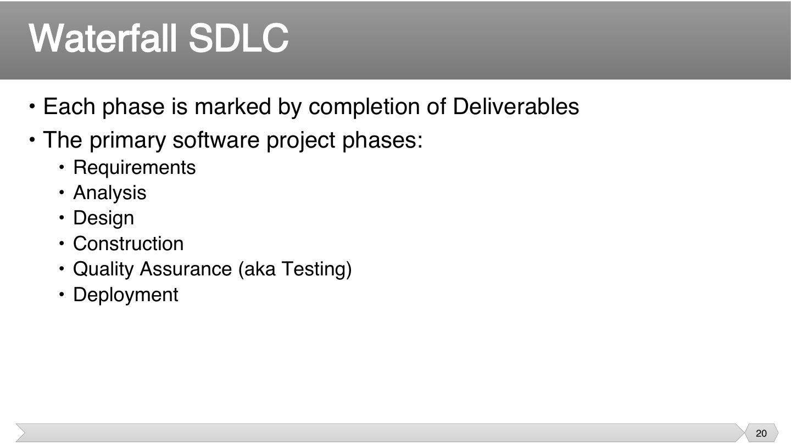
The idea is that you don’t start design until requirements are signed off. Finished deliverables keep control tight, but they also make later changes expensive.
Each stage depends on the last: you can’t design what hasn’t been analyzed. Mind the order, and that testing comes near the end: that’s the main weakness.
What marks the end of each waterfall phase?
Which phase comes right after Design in the slide’s waterfall?
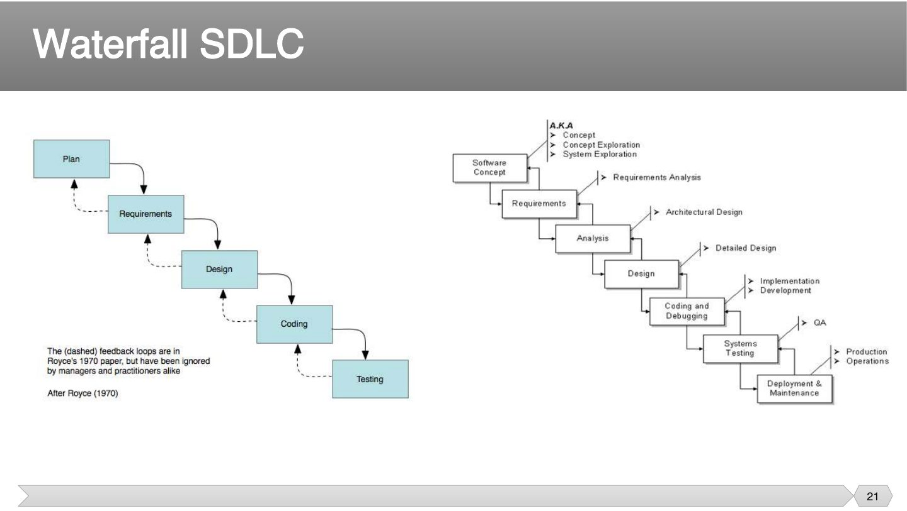
Royce’s waterfall: plan → requirements → design → coding → testing, with dashed feedback loops back to the previous step. The note on the left says those loops were in Royce’s paper but have been ignored by managers and practitioners alike.
On the right, a more detailed version (concept → requirements → architecture → detailed design → coding → testing → deployment). Either way, testing comes last, which is why problems are found late.
What did Royce’s diagram include that people came to ignore?
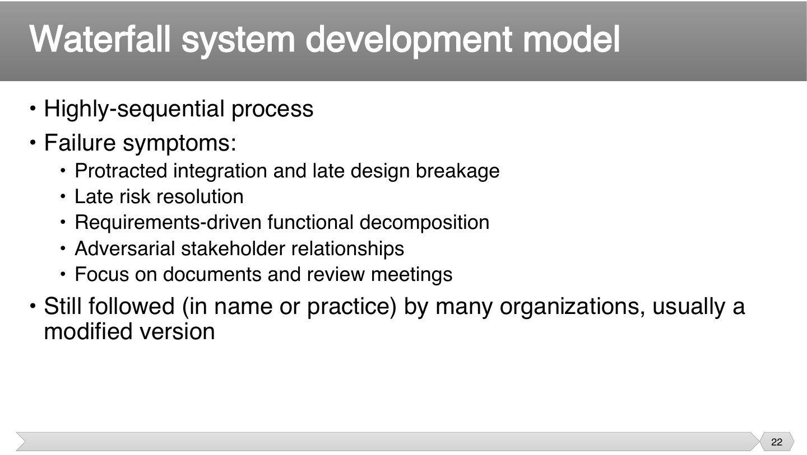
Nothing is combined until late, so the first real proof the parts fit comes at the end. That’s when design flaws appear and are most expensive, hence late design breakage and late risk resolution.
Adversarial stakeholder relationships (arguing over signed documents) and a focus on documents and reviews instead of working software.
Why does it survive? It’s easy to explain and to contract for, and some projects suit it. Most organizations use a modified version, adding some iteration, rather than the pure form.
Why does waterfall suffer from late design breakage?
Why might stakeholders become adversarial in waterfall?
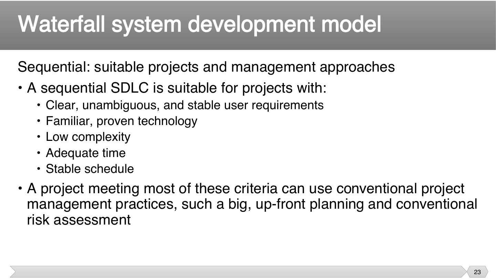
Every item is a form of “we already know what we’re doing”. If requirements and technology are both familiar, there’s little to discover, so a fixed plan works. If one is missing, sequential gets riskier.
When there’s little to learn along the way, planning it all at the start is efficient. Conventional methods are the right call here, so don’t assume agile is always better.
Given the evolving requirements (student usability, advisor requests, IT integration rules), which development approach (Agile, Waterfall, or Hybrid) would you recommend, and why would it be the best fit for this project?
Agile (Scrum) (0.5), because it handles the evolving requirements from students, advisors and IT, delivers iteratively so each sprint gets feedback, and integrates with DevOps pipelines for frequent tested releases (0.5). Justify it against the slide criteria: the requirements are reasonably clear but not stable, so waterfall’s “clear, unambiguous, stable requirements” condition fails.
Which project suits a sequential (waterfall) SDLC?
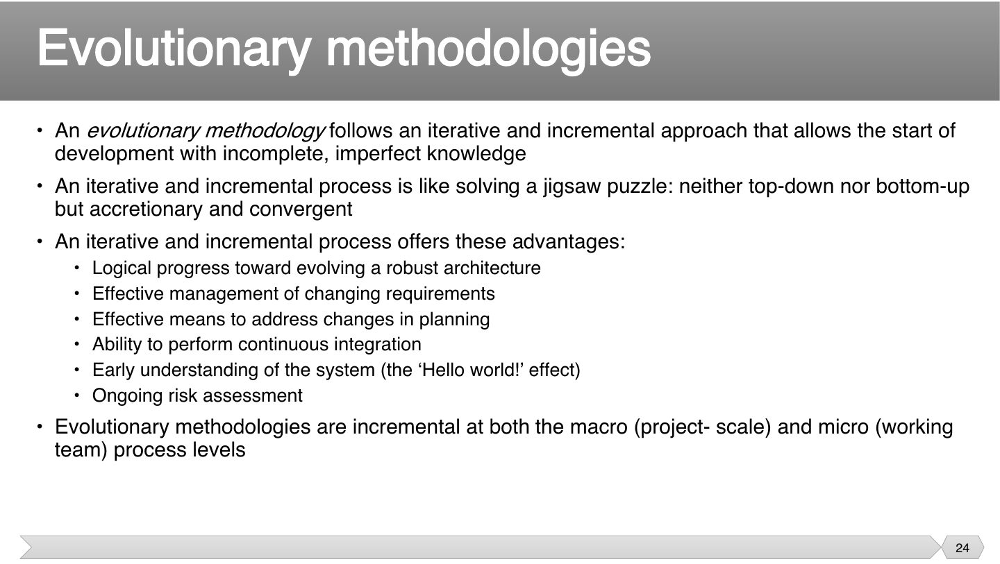
Waterfall needs you to know a lot before starting. Evolutionary approaches accept you don’t, so you begin with what you know and learn the rest by building.
It is like a jigsaw puzzle: neither top-down nor bottom-up, but accretionary and convergent (pieces accumulate until the picture emerges).
Each benefit comes from working in small pieces. Because you integrate often, you spot problems fast, and early working results, even a “Hello world!”, show the team that things connect. That’s continuous integration in practice.
The same pattern works at two scales. The whole project grows in stages (macro), and within each stage, teams build small parts bit by bit (micro).
Why is iterative development compared to a jigsaw puzzle?
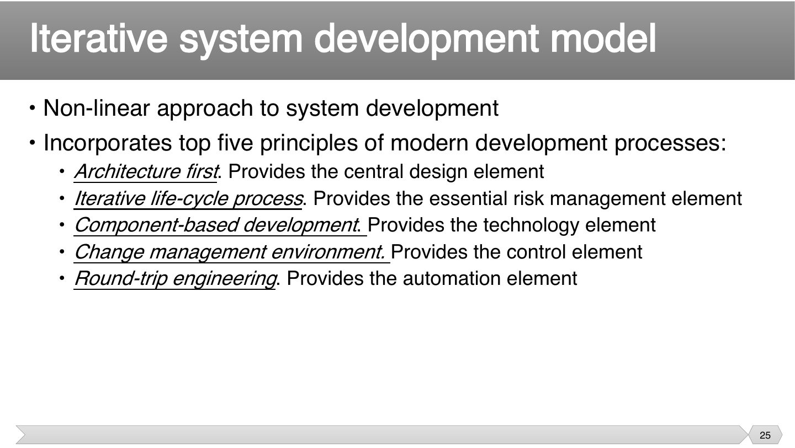
You don’t pass through each stage once and leave it behind. Non-linear means you can return to earlier work as you learn, which fixes waterfall’s main weakness.
Why architecture first? It’s the riskiest and hardest thing to change later, so get it stable early. And working in iterations surfaces risks sooner, which is why it’s called the risk-management element.
Reusing components saves building everything from scratch. If changes happen often, you need a system to control them, and automation keeps models and code matching, so nobody works from outdated designs.
Which principle provides the essential risk-management element?
Which principle provides the control element?
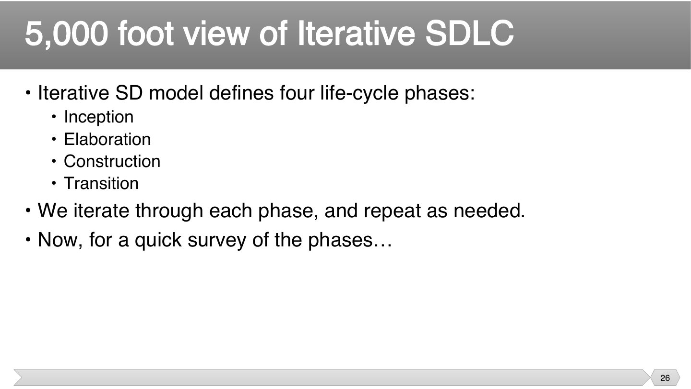
Each phase answers a different question. Should we build it? Can we build it? Build it. Can they use it? That’s a good way to recall inception, elaboration, construction, transition.
A phase isn’t one pass, because you may need several rounds before the risk is low enough to move on. That’s the point of repeated as needed.
Which is the correct order of the iterative SDLC phases?
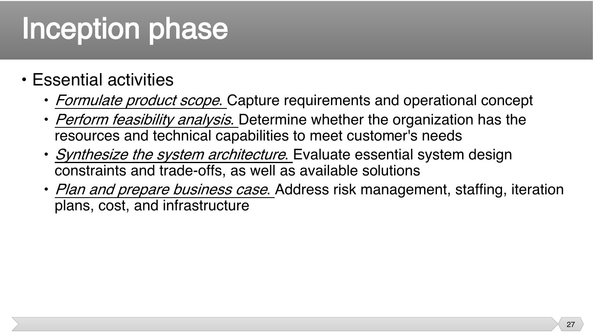
Before spending much, work out what you’re actually building and for whom. Product scope at this stage is a rough outline, not every detail…
…and check it’s possible with what you have. Feasibility can stop a bad project at the cheapest moment…
…and sketch how it could work. You’re not designing it all yet, only checking that one workable architecture exists…
…and finally justify it. The business case is what decision-makers use to agree whether to go on.
Whether the organization has the resources and technical capability is checked in:
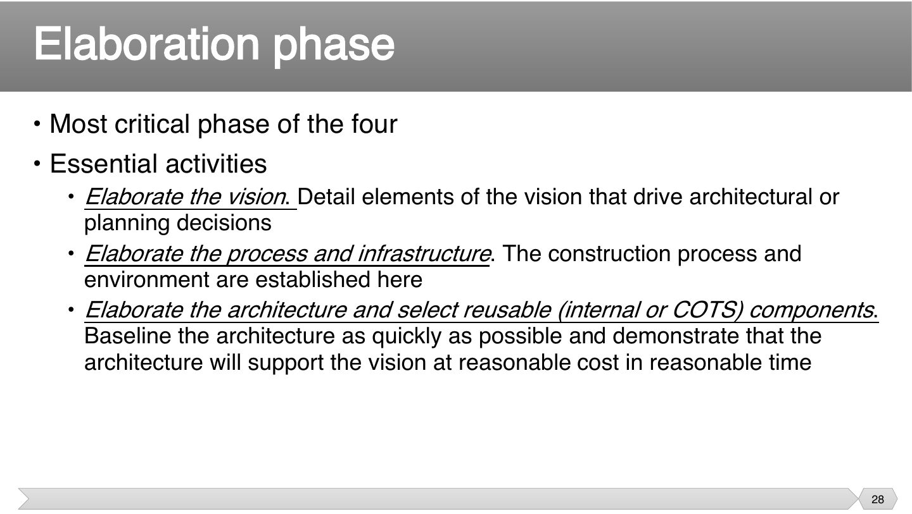
Elaboration is the most critical of the four phases: it removes the biggest risks before heavy spending starts.
You can’t detail everything yet, so focus on what shapes big decisions. If the vision says “millions of users”, that detail changes the architecture, and the color of a button doesn’t.
Everything construction needs is set up now: tools, environments and ways of working. Getting the infrastructure right here avoids slowing down a much larger team later.
To baseline means to fix it as the reference, and only after showing that it works. Reusing COTS (off-the-shelf) parts saves effort, as long as they fit the architecture.
Which iterative phase is described as the most critical?
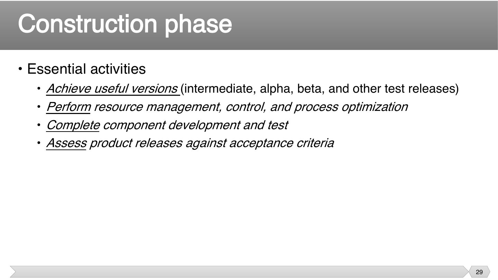
Unlike waterfall, you don’t wait until the end to see something. Each useful version can be tried, and an alpha or beta gets real feedback early…
…this is when most people and money are in use. So the PM’s work shifts to resource management and keeping the flow efficient…
…it’s also the phase where the bulk of development and testing gets done, with the hard design risks already handled…
…and “done” isn’t just an opinion. Each release gets checked against acceptance criteria, agreed in advance, so that everybody knows when it’s good enough.
Alpha and beta releases are part of which phase?
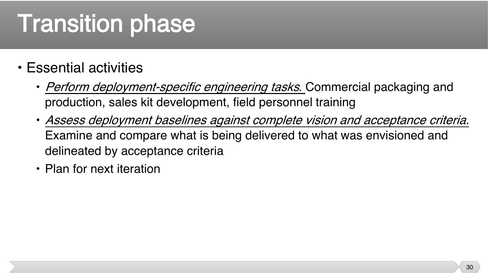
Working software isn’t yet a usable product for customers. Someone still has to package it, and train users and support staff, which is what deployment-specific tasks mean.
This is the final reality check: did we get what we set out to get? Comparing the result with the original vision reveals gaps before you call it finished.
Most products carry on after a release, so the last phase feeds into the next. Planning the next iteration is why the model is drawn as a repeating cycle.
Training field staff and preparing sales kits belong to:
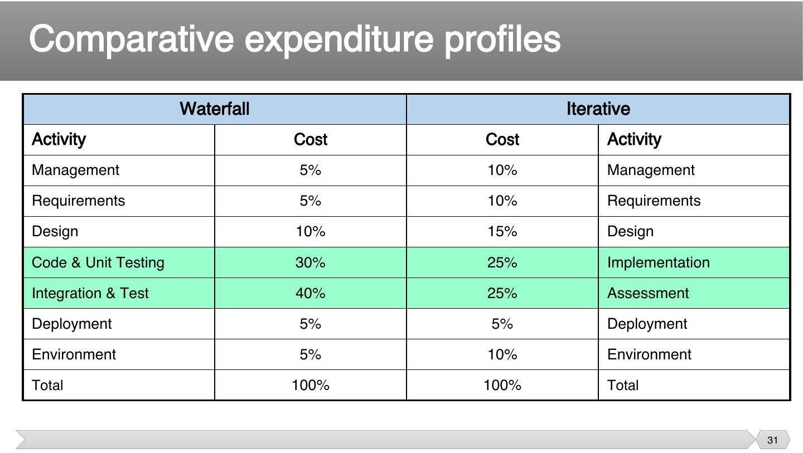
Waterfall spends most of its budget late: 30% on code and unit test and 40% on integration and test, because problems surface only when everything comes together.
It costs more up front, as more is spent on management and design. But you pay less for late surprises, since testing and integration are spread throughout. Iterative moves the spending earlier, when mistakes are cheaper.
In the waterfall expenditure profile, which activity takes the largest share of cost?
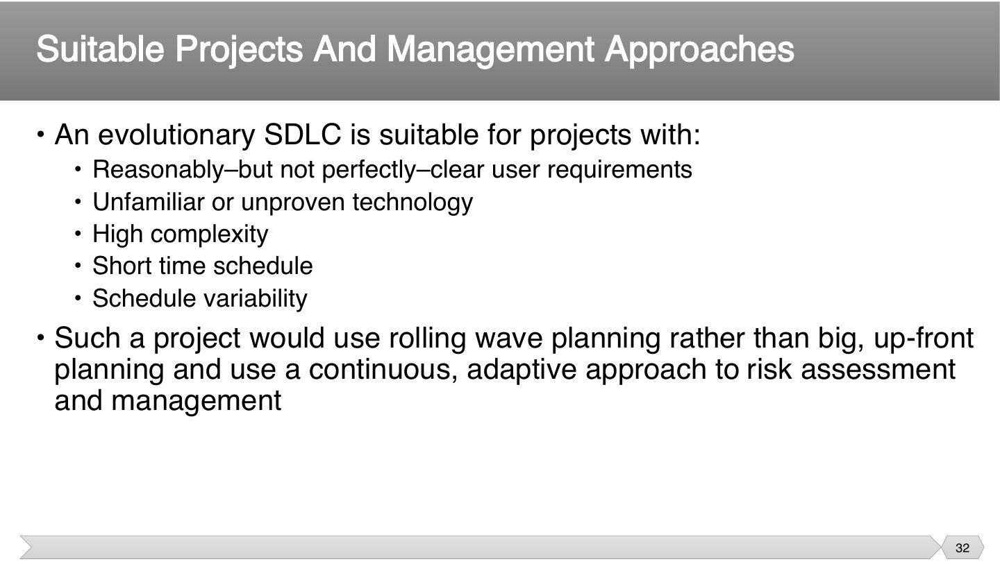
Compare with slide 23: everything flips. You don’t fully know what’s wanted or how to do it, and time is tight. So an evolutionary SDLC lets you learn and deliver as you go. Remember RUSHeS.
Such a project uses rolling wave planning (detailed plans for the near term, rough plans for later) instead of big up-front planning, and a continuous, adaptive approach to risk.
In which type of project would an iterative development approach be most beneficial?
Given the evolving requirements (student usability, advisor requests, IT integration rules), which development approach (Agile, Waterfall, or Hybrid) would you recommend, and why would it be the best fit for this project?
Agile (Scrum) (0.5), because it handles the evolving requirements from students, advisors and IT, delivers iteratively so each sprint gets feedback, and integrates with DevOps pipelines for frequent tested releases (0.5). Justify it against the slide criteria: the requirements are reasonably clear but not stable, so waterfall’s “clear, unambiguous, stable requirements” condition fails.
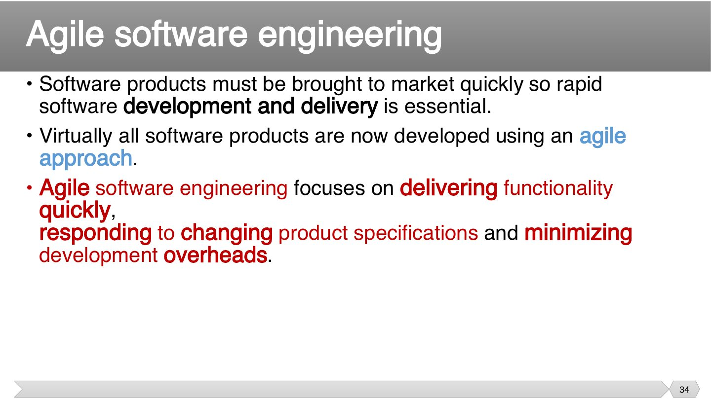
Competitors may launch first, and a late product can miss its market. That’s what makes speed so valuable, and why quickly comes up on this slide.
It’s now the normal way to build most products. But “virtually all” is a broad claim: safety-critical systems may still favor heavier methods. Still, you should treat agile as the default for products.
Three goals with a common idea: avoid effort that doesn’t reach the customer. Long documents that nobody reads are overhead, and they make change expensive.
What is agile software engineering focused on?
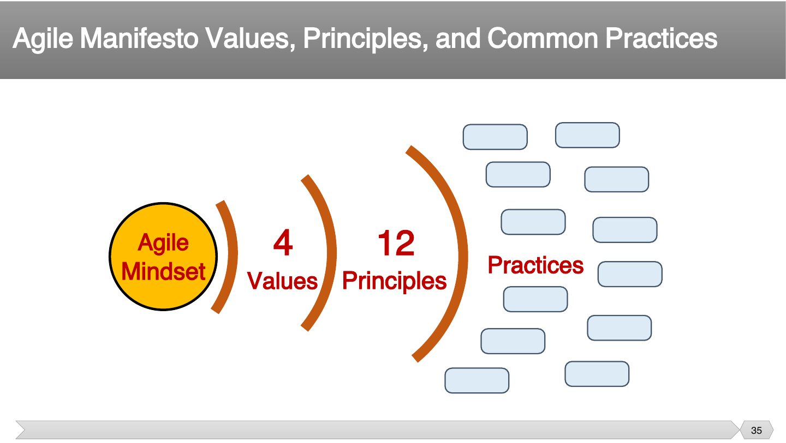
Agile is first a way of thinking. You can hold daily stand-ups and still not be agile, if you won’t change the plan. The 4 values say what matters most…
…and the 12 principles turn those values into more specific guidance, such as welcoming late changes…
…and expressed through many practices (stand-ups, user stories, TDD), which a team chooses to fit its needs.
How many values and principles define the Agile Manifesto?
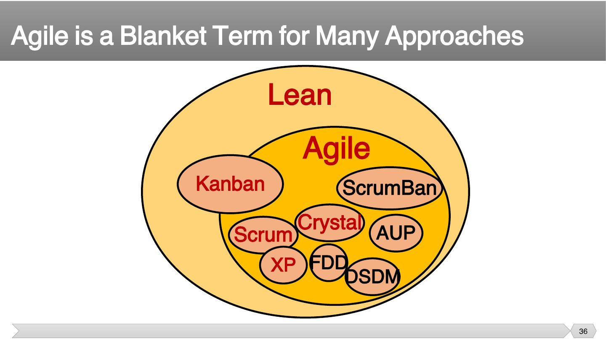
Agile isn’t a single method, so “we use agile” says little by itself. Scrum and Kanban both count, and they work quite differently.
Lean is broader still, and agile sits inside it.
Scrum and Kanban are both covered by the term “agile”.
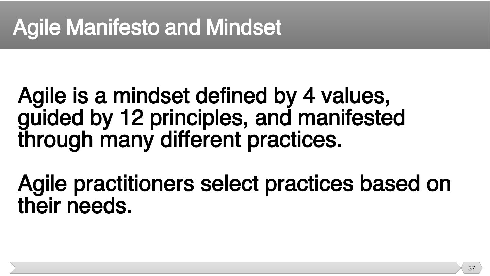
Three layers, from general to specific. The values rarely change, while teams choose practices as they see fit. That’s why two agile teams can look very different.
Practitioners select practices to fit their needs; there is no single “agile process”.
Agile is best described as:
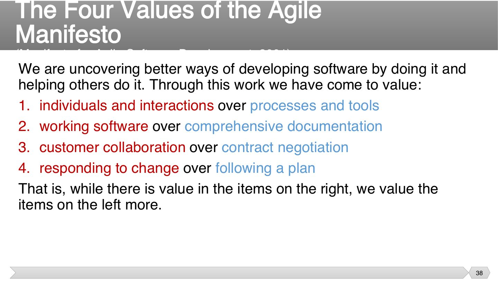
A team that talks can solve most problems quickly, while one that only follows a process may not notice it’s doing the wrong thing. So the value says prefer individuals and interactions.
A 200-page plan can’t show whether anything works, but running software can. That’s why working software is the real test of progress.
A contract can’t foresee everything. If you treat the customer as a partner, you solve surprises together, rather than arguing over the wording, so collaboration comes first.
A plan is your best guess at the time. If the market changes, following it perfectly means delivering something no longer wanted, so responding to change beats following the plan.
The items on the right still have value; the left is valued more. A common trap: agile does not say “no documentation”.
Which is one of the four values of the Agile Manifesto?
The Agile Manifesto says documentation has no value.
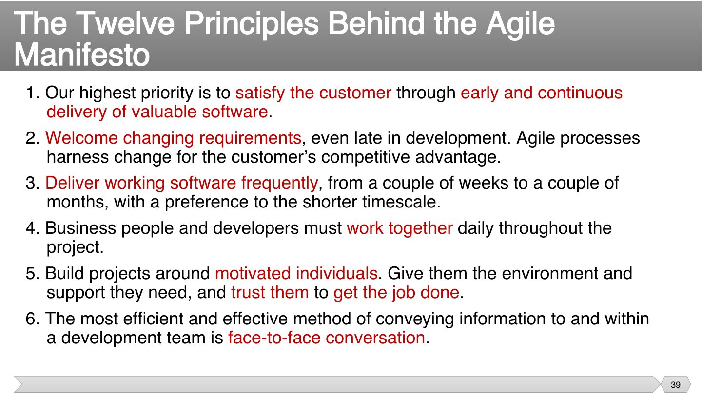
Early delivery gets value to users sooner and gets real feedback, not guesses. That’s why early and continuous delivery is the top priority.
This is a big shift, as traditional projects treat late change as a failure. Agile sees it as a sign you’ve learned something, so it welcomes changing requirements if they make the customer more competitive.
The shorter the cycle, the sooner you find a mistake, and the less you’ve wasted on it. So frequent delivery reduces risk as well as adding value.
If developers only hear from the business occasionally, they have to guess. Working together daily replaces guesswork with a quick question.
You can’t control people into caring. Hire good people, give them what they need, and trust them. Micromanaging skilled people wastes their ability.
A quick talk settles what could take days of emails, because you can ask and clarify on the spot. That’s why face-to-face is named as the most effective.
Late in the project, a customer asks for a change. What does the agile principle say?
What is the highest priority under the principles?
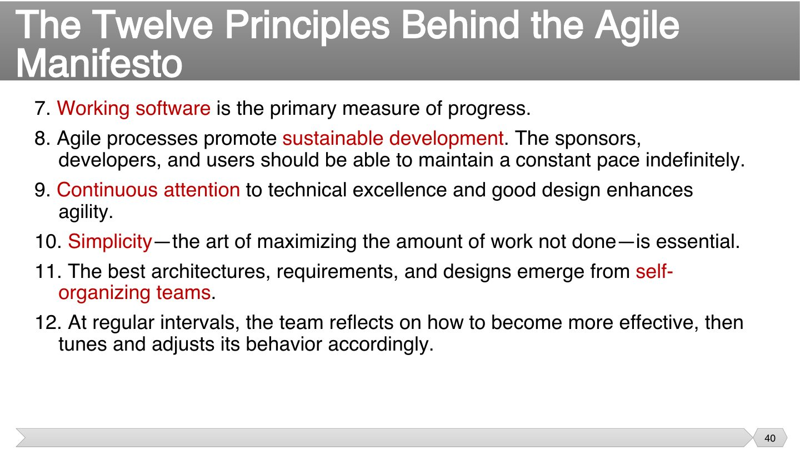
Hours spent and documents written don’t tell you whether it works. Only working software does, so “90% done” with nothing running means little.
Overtime can win a week, but tired people make more mistakes and leave. Sustainable means a pace you could keep up forever, without crunches.
Messy code gets slower to change over time, so skipping design makes you less agile later. Technical excellence is therefore what keeps change cheap.
The best feature might be one you never had to build. Simplicity means asking “do we really need this?”, because work not done has no bugs and no maintenance.
People doing the work see problems first and care more about what they designed themselves. So self-organizing teams tend to produce better designs than plans handed down.
A process that’s never reviewed never improves. The team stops regularly to reflect on how it’s working, and agrees on something to change. That’s a retrospective.
According to the agile principles, the primary measure of progress is:
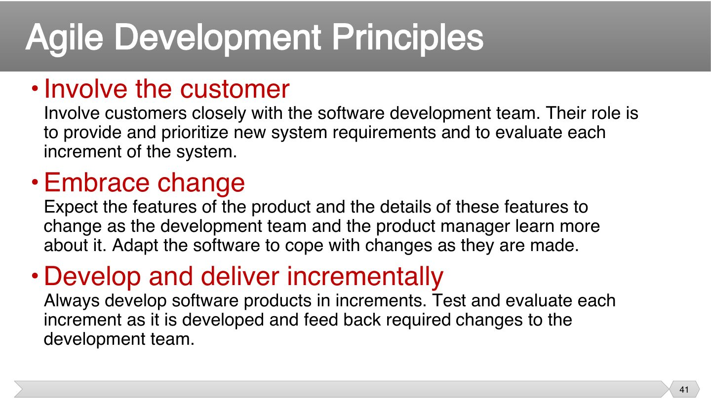
Nobody knows what customers want better than customers do. Having them prioritize and judge each increment prevents you building the wrong thing for months.
Don’t treat change as a failure of planning. You’ll learn more about what’s needed as you go, so embrace change and build software that’s easy to adjust.
Each piece is a chance to check you’re right. If you only deliver incrementally, a wrong turn costs one increment rather than the whole project.
In agile, who provides and prioritizes new requirements?
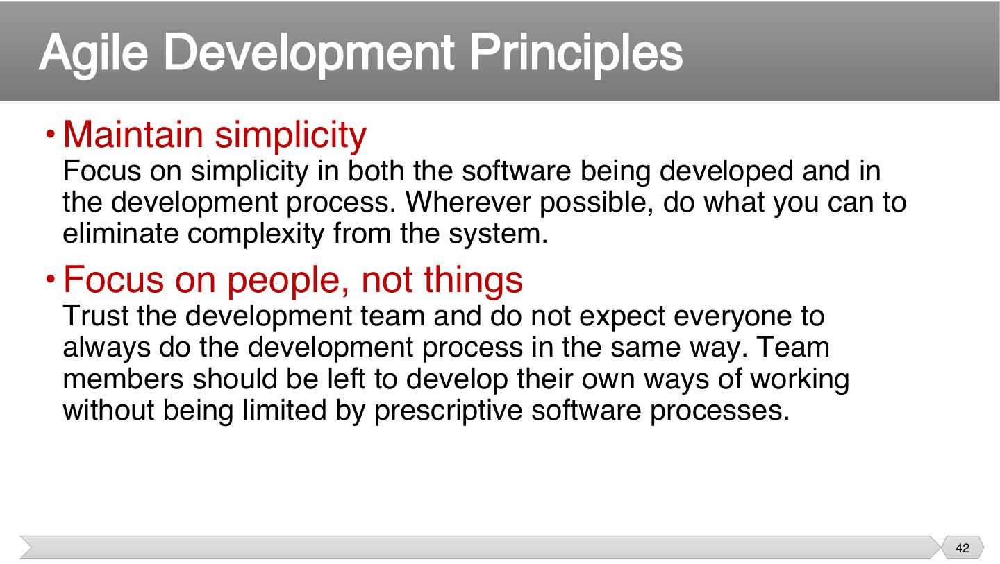
Complexity is what makes software hard to change later, and extra process does the same. Ask “can this be simpler?” of the code and of how you work: maintain simplicity.
People differ, and forcing everybody into one way of working wastes their strengths. Trust the team to find what works for them, rather than imposing a rigid process.
A manager makes every developer follow one rigid routine. Which principle does this go against?
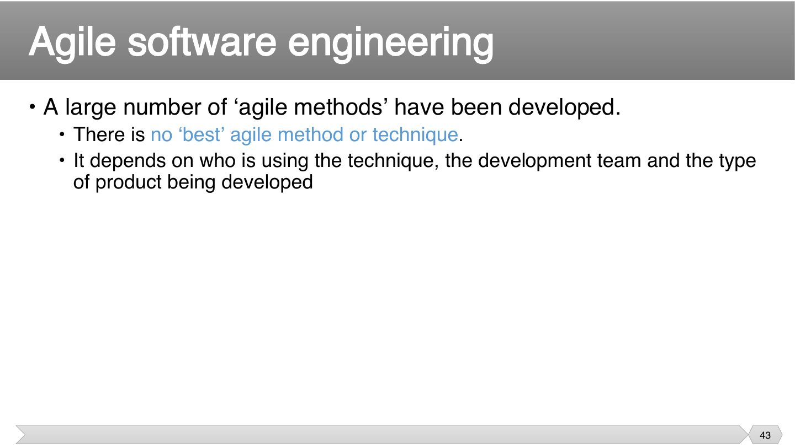
Don’t be overwhelmed by the names, since they share the same core ideas. The many methods mostly differ in emphasis…
…and there is no single best one…
A small startup and a bank may need different things. So asking “what’s the best agile method?” is the wrong question, and you should ask what suits this type of product and team.
There is one best agile method for all teams.
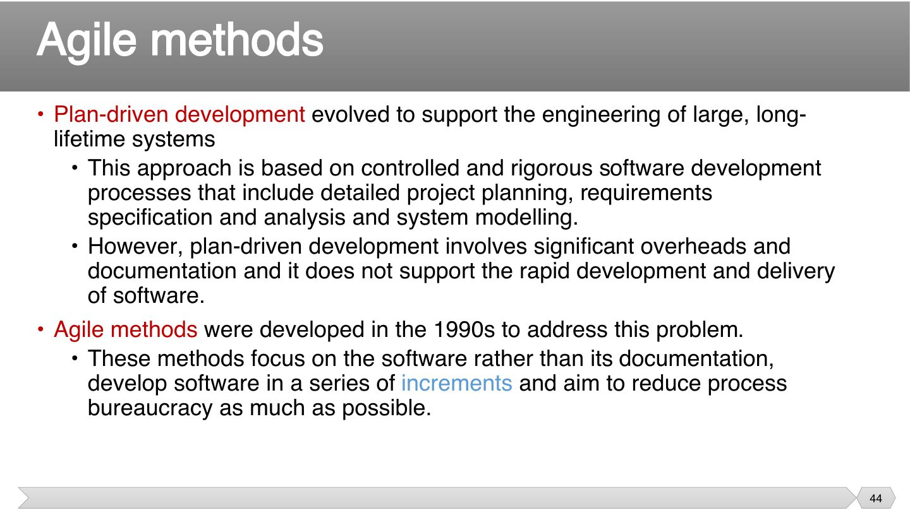
It isn’t a bad approach, just built for a different problem. A system that must run for decades, built by hundreds, needs careful control, which is why it suits large, long-lifetime systems…
…and that’s what all the rigor is for. Detailed planning and system models let very large groups coordinate without constantly talking…
…but for a small product in a fast market, all that overhead means you may arrive too late, as requirements can change before you’ve finished the documents.
Time saved on paperwork goes into building. That’s the trade: less bureaucracy and documentation, which is fine for a small team that can just talk to each other.
What problem were agile methods developed to address?
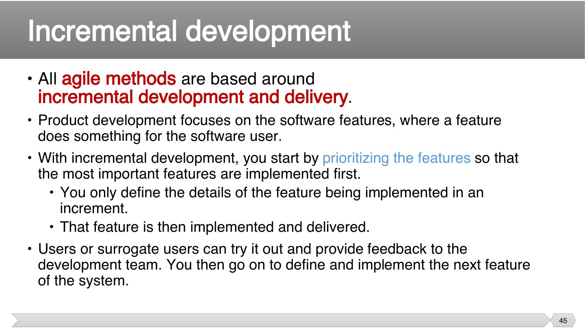
A feature is defined by what it does for the user, not how it’s built. Organizing around features with incremental delivery keeps everybody focused on visible value.
If you run out of time or money, you want the most useful things already done. Doing the most important first means you lose only the least valuable work.
Only define the details of the feature being built in this increment; the rest stays rough until it is needed.
Real use reveals what discussions can’t. Letting users give feedback after each feature means the next piece of work benefits from what you’ve just learned.
Which features get implemented first?
When do you define a feature’s details?
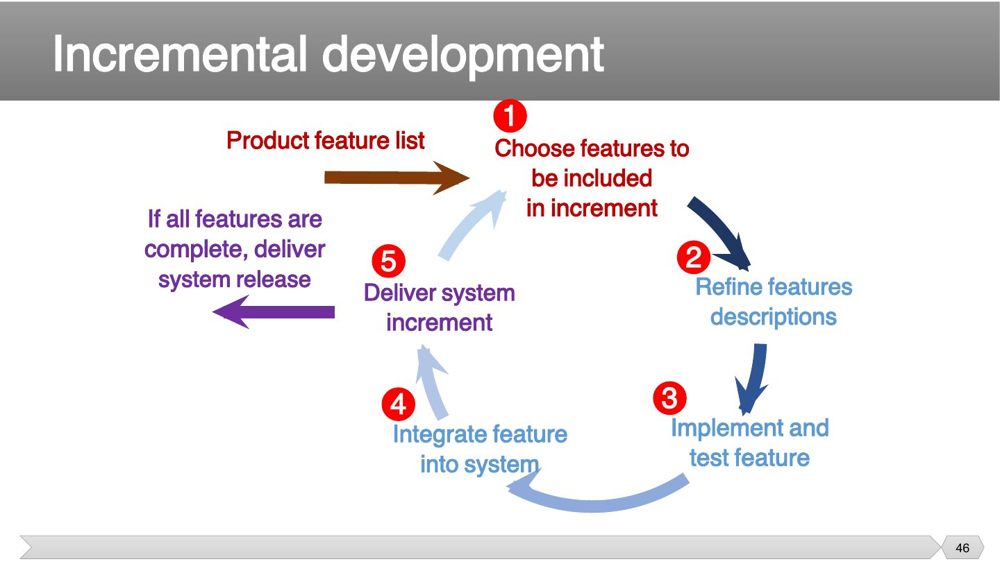
Start from the full list but pull in only what fits this round, so the team isn’t choosing everything at once…
…only now do you work out the details, since by this time you know most about each feature, so you refine only what’s going to be built…
…and build and check it together. If you implement and test at the same time, bugs get found while the code’s still fresh…
…then you check it works with everything else. Integrating each feature right away prevents the big painful merge at the end…
…and put it in front of people. Each delivery is another chance to learn. Repeat until the list is empty.
What comes right after choosing features for the increment?
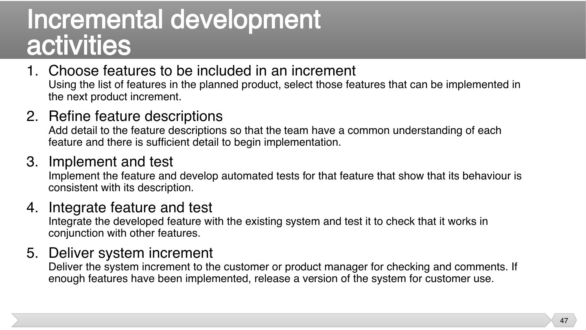
Pick what can realistically be finished next. Choosing a small amount keeps each cycle short and its results visible.
Just enough detail for everyone to understand it the same way. Refining too early wastes effort if the feature changes, and too late means confusion.
Automated checks mean anyone can confirm that the feature still works, any time. Automated tests also stop later changes silently breaking it.
A feature can work alone and still fail with others. Integrate and test checks they work together, as the problems often live between the parts.
Someone has to judge it. Giving it to the customer or product manager brings comments that shape the next increment. A public release can wait until enough has been delivered.
What does “implement and test” include?
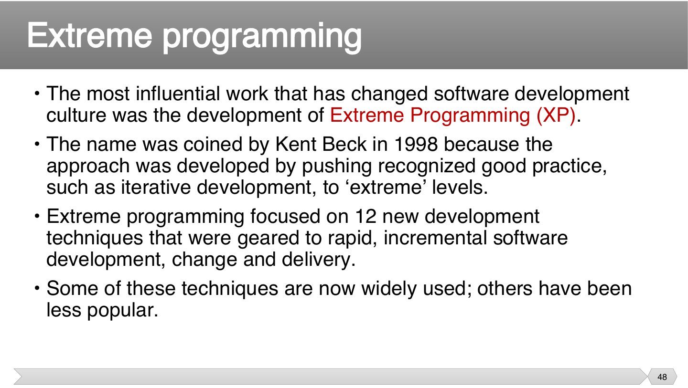
Many everyday practices came from here, so it’s why it’s called most influential, even for teams who’ve never used XP as a whole.
If code review is good, why not review constantly? That’s pair programming. If testing is good, why not test all the time? That’s the extreme idea: take what works and push it further.
You don’t need to memorize all 12, and the next slides cover the ones in wide use. Together, they’re built to make frequent change safe…
…and teams picked what suited them. Pair programming all day is less popular, as it’s tiring and costly, while tests and continuous integration became the norm.
Why is it called “Extreme” Programming?
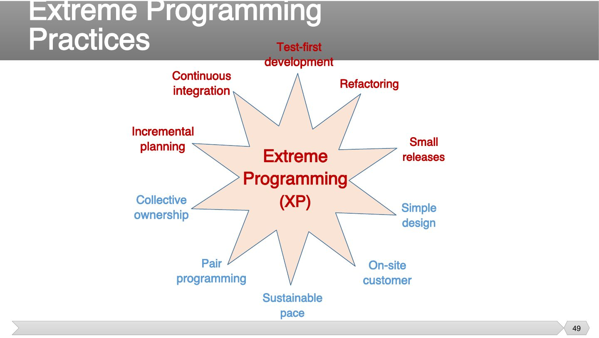
These all make frequent change safe: tests catch mistakes, refactoring keeps code clean, and small releases limit the damage if something goes wrong.
These tackle knowledge. With pair programming and shared ownership, no one person is the only one who understands a module, and an on-site customer gives instant answers.
Sustainable pace: no long overtime. The next slides cover the widely adopted ones.
Which is an XP practice?
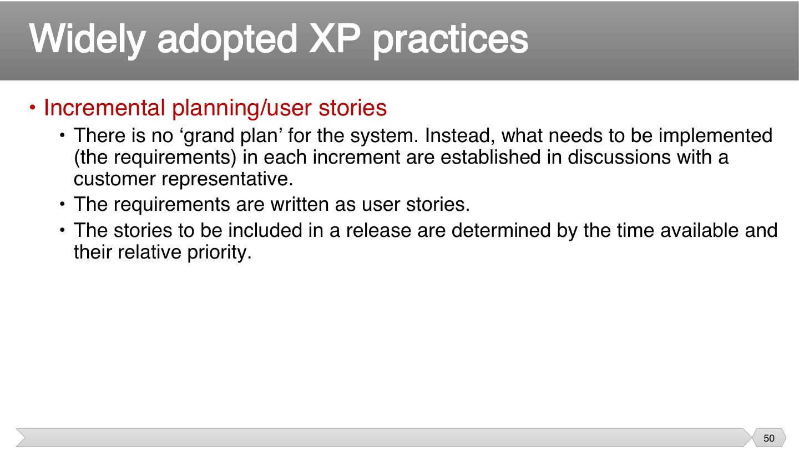
A big plan would be out of date before you got there. Deciding one increment at a time with a customer representative keeps the work tied to what’s needed now.
A user story states who wants something and why, not how to build it. The “so that” matters, as it tells you whether a simpler solution would do.
You can’t do everything by the deadline, so the two limits decide: what’s most valuable, and what fits in the time available. That’s how scope stays flexible.
How are requirements written in XP?
What decides which stories go in a release?
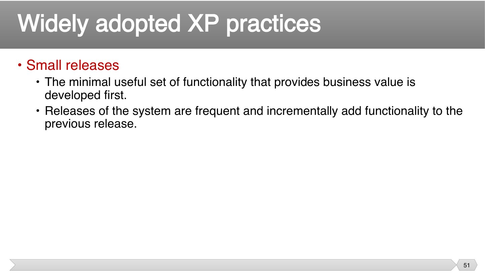
Ask “what’s the smallest thing that’s useful?”, and build that first. A minimal useful set starts earning value and feedback much sooner than a full system.
Each release is small, so it’s low risk, and it’s quick to fix if wrong. Frequent releases also keep customers seeing progress.
What gets developed first under small releases?
It sounds backwards, yet writing the test first forces you to define “working” before you start. That’s the idea behind test-driven development.
If you can’t write a test for it, you may not understand what it should do yet, so the test clarifies the job. You’ll also always have a version known to pass.
Nobody has time to manually re-test everything after every change. Automated runs make that free, and that’s what makes frequent change safe…
…so if a change breaks an old feature, you find out within minutes, while it’s easy to see what caused it, rather than weeks later.
In test-driven development, developers:
The longer code stays separate, the more painful the merge. Integrating each finished task right away keeps the differences tiny, and everyone works from the current system.
All unit tests from all developers run automatically and must pass before the new version is accepted, so integration problems appear in minutes instead of at the end.
When a task is done in continuous integration, what happens?
Think of tidying a kitchen while the same meals still come out. Users see no difference, but improving the structure makes the next change easier and safer. Tests prove nothing broke.
Waiting for a “cleanup phase” means it never happens. Fixing small problems as soon as you see them stops them from building up, and this only works thanks to automated tests…
…the payoff comes later. Maintainable code stays cheap to change, which is what lets a team keep moving quickly over the years.
A developer tidies code without changing what it does. What is this?
The same material appears here again: incremental planning with user stories. If it’s on two slides, it’s likely worth remembering.
What replaces a “grand plan” in XP?
A business can’t fund something without knowing roughly what it costs and when it arrives. Scrum doesn’t remove this need for how much…
Traditional planning’s answer sounds reassuring: a full schedule with dates. But a long-term plan gives confidence, not necessarily accuracy…
The further ahead a plan looks, the more it’s just guessing. So when plans always change, trusting a detailed plan for next year is a mistake. Short-term plans are the ones you can rely on.
Scrum is about how a team organizes and plans, not how it writes code. So it mandates no technical practices, which is why it’s often combined with XP. A common trap.
Scrum mandates specific technical practices such as pair programming.
It keeps everyone in sync without long meetings. If someone’s stuck, it’s out in the open within a day. Careful: in this slide “Scrum” means the meeting, as well as the method’s name.
A short, fixed period forces real progress and limits how long you can go wrong. Sprint length usually stays the same, so the team gets a steady rhythm.
The ScrumMaster is not a boss. They help the team use the method well and remove obstacles, so don’t assume it’s just a new name for project manager.
In this slide, what does “Scrum” mean as a term?
In Scrum, you focus on one product rather than a project with an end date. This keeps attention on what’s being built over its whole life.
Someone has to decide what matters most. Having one product owner means developers get clear priorities, instead of conflicting requests from many people.
Everything that might get done lives in one place, so nothing is lost and it can be ordered. The backlog is the only source of work for the team.
Who identifies product features and attributes?
Small enough that everybody can talk directly, and large enough for a mix of skills. Five to eight keeps communication paths manageable.
This sets the bar: “mostly finished” doesn’t count. A potentially shippable result means there’s no hidden work left, so you could release it if you chose to.
Velocity: an estimate of how much work the team can do in one sprint, used to plan the next sprints.
What is velocity?
How large is a Scrum development team?
Engineers love interesting technical problems, which isn’t always what customers need. The Product Owner keeps asking “does this help the product?” so the work stays useful.
Who’s best placed to do this? Someone who already understands the market and the customers. So the product manager normally takes this role.
This trips people up: the ScrumMaster doesn’t assign tasks or manage people. They’re responsible for how the method is used, and they’re there to coach.
Theory and practice differ. Someone still has to handle budgets and reports, so in many firms this person also takes on project management duties. Slide 70 lists these.
Who keeps the team focused on the product instead of technically interesting but less relevant work?
The ScrumMaster is a conventional project manager.
Since the length is fixed, a slipping task doesn’t extend the sprint. Work gets dropped instead, and this makes delivery dates predictable.
A problem is visible within a day, and teammates can help right away. That’s the value of daily meetings: short feedback, not status reporting to a boss.
“Shippable” stops the team from piling up unfinished work to fix later. Each sprint’s increment really is complete, so you always have something you could release.
Should a sprint get longer if work isn’t finished?
The team pulls the most valuable items it believes it can finish. Because it’s chosen by the team, the sprint plan is more realistic than if someone else had set it.
During the sprint the team develops and tests software, with a daily Scrum.
A sprint’s result is seen by stakeholders in the review, and what they say feeds the next one. Repeating this makes the shippable increment a regular way of learning.
Where do a sprint’s items come from?
The list changes constantly as you learn. Updating it before each sprint means the team always works on what’s most valuable right now.
Fixing the time forces prioritizing: you can’t fit everything, so what’s important has to go first. That’s what makes a timebox powerful.
They’re closest to the work, so they often decide best, and people commit to their own decisions. Consensus also spreads knowledge across the team.
How do self-organizing teams make decisions?
If it’s not on the list, it doesn’t get done. This gives one place to see all remaining work, so the product backlog is what gets prioritized and discussed.
A PBI is just the name for a single entry. You’ll see the short form in exam questions, so don’t be thrown by it.
It’s not only features! Engineering work needs a place too, or it never gets scheduled. Keeping all varied work on one list forces honest trade-offs.
Order matters, since the team always takes from the top. An always prioritized list means whoever is available starts on what’s most valuable next.
Where should the next items to implement be in the backlog?
A product backlog can include engineering improvements as well as features.
Notice the form: who wants it and what they want. A feature is written from the user’s point of view, so everyone can see who’s helped by it.
This came directly from what users said they need. A user request may become a feature, but it starts as somebody’s stated need.
No user will ever see this, and it’s still needed. Choosing which open-source software to rely on is a development activity that keeps the team able to build.
Users won’t notice this directly either, but it protects them or keeps the system healthy. An engineering improvement is easy to neglect if it isn’t on the backlog.
“Refactor user interface code to improve performance” is which kind of PBI?
Don’t spend time detailing something that may never happen. At consideration, a line or two is enough, and dropping it costs nothing.
Now it’s worth investing some thought, as you’ve decided it matters. Refinement answers the open questions, so that it can be built.
The test for this state is whether the team could start tomorrow. If it’s possible to estimate it and nothing is blocking it, the item is ready.
An item has a reasonably clear definition, but still needs work to understand it. Which state is it in?
Refinement: break PBIs into smaller, clearer items (PBI 1 becomes 1.1 and 1.2).
Estimation: estimate the effort for items (PBI 2E, 3E).
Prioritization: reorder the backlog by value.
Creation: add new items as they are discovered (PBI 6). The result is a revised backlog.
A PBI is broken into two smaller items. Which activity is this?
Planning sets what this sprint is for, then execution is the work. The team checks in daily, so a problem can’t hide for long.
Work is continuously integrated, and the sprint review closes the sprint.
What closes a sprint?
If everybody can interrupt developers, they stop getting work done. So the ScrumMaster handles requests about the team, like reporting and HR, and shields them.
Product-focused ones (customers, marketing, sales) go through the Product Owner. Either way, the developers are shielded from distractions.
A customer has a product question. Who handles this external interaction?
Scrum doesn’t remove the business’s need for information. Someone still has to report on money and progress, even if the team runs itself.
Rules still apply and bills still need paying, however agile the team is. So administration doesn’t disappear, and Scrum doesn’t say who handles it.
Scrum says little about holidays or hiring, but they still need handling. So people tasks often fall to a ScrumMaster or PM. Hence “ScrumMaster isn’t a PM” is only partly true in practice.
Which responsibility is “Administration”?
“Best way” is the slide’s claim for products, where speed matters. For rapid product development, agile fits because it’s built for frequent delivery…
…and how? By working in short cycles and cutting whatever doesn’t help, so minimal overhead leaves more time for building…
You’ll meet XP’s practices even in teams that have never heard of XP, since user stories and continuous integration became standard everywhere.
Which practices did XP introduce that are now mainstream?
Keep the two straight. XP says how to write the code, and Scrum says how to organize the work. So they fit together, and Scrum does not define engineering practices.
One list holds all the work, and each sprint takes some of it. The product backlog is what links long-term plans to daily work.
How does Scrum differ from XP?
No “we’ll finish it next sprint”. Potentially shippable means the increment is really done, so progress is real and not just reported.
The team decides together who does what. That only works with skilled people who trust each other, so self-organizing isn’t something you can just announce.
You don’t have to adopt all of Scrum. Many teams use just a backlog and sprints, which is why any agile process can borrow these.
Can a team use a backlog without using all of Scrum?
The key line in the triangle: waterfall fixes scope and lets time and cost vary; agile fixes time and cost (the timebox and team) and lets scope vary.
The table compares the rest: waterfall focuses on processes, manages by plans, plans requirements up front, involves the customer at the start and end, and delivers everything at the end; agile focuses on people, manages by change, updates requirements every iteration, involves the customer all the time, uses self-organized teams and coaching leadership, and delivers frequently in parts.
In agile, which of the triple constraints is typically allowed to vary?
Given the evolving requirements (student usability, advisor requests, IT integration rules), which development approach (Agile, Waterfall, or Hybrid) would you recommend, and why would it be the best fit for this project?
Agile (Scrum) (0.5), because it handles the evolving requirements from students, advisors and IT, delivers iteratively so each sprint gets feedback, and integrates with DevOps pipelines for frequent tested releases (0.5). Justify it against the slide criteria: the requirements are reasonably clear but not stable, so waterfall’s “clear, unambiguous, stable requirements” condition fails.
Section divider: DevOps = development and operations.
The DevOps gap. Agile development delivers iterative, incremental progress and keeps sending change requests…
…while IT operations care about infrastructure, deployment and system reliability, and resist frequent major releases and patches. Fast change and stability pull against each other.
What is the DevOps gap?
The two sides often have opposed targets: one is judged on shipping, the other on stability. Removing the barriers starts with shared goals, not just talking more…
…and a mindset of blame prevents this. If an outage leads to learning, rather than punishment, people share information. Automation then makes frequent releases safe to do…
Developers can ship often once continuous delivery is in place, and operations gets predictable, automated deployments. That way neither side has to give up its goal.
How do organizations close the DevOps gap?
Agile joined business and developers. DevOps extends that to the people who run the software. So it isn’t a replacement for agile but an extension, which is why it’s one unit.
When developers know how their software will run, they design for it from the start. That’s why there are fewer production defects: operating needs aren’t an afterthought.
DevOps extends agile principles by:
The market figures are context only (not exam material): DevOps is growing fast.
Continuous delivery can make deadlines seem unimportant, but a business still has budgets and commitments. So DevOps still needs someone focused on on schedule and under budget…
…and with many teams and tools involved, coordination becomes a real job. Fast-moving work needs this more, not less.
Does DevOps remove the need for planning?
Traditional PM assumes a project starts and ends, while DevOps never really stops. That’s the apparent conflict: where’s the finish line, if it seems at odds with project management?
A Gantt chart assumes that you know the tasks and order well in advance. Timelines and milestones suit predictable work, and they’re harder to apply when everything keeps changing.
The tools change, while the job remains: know what’s happening and help it go well. So PM can adapt by planning in short cycles.
Each sprint’s output becomes the milestone, rather than one distant end date. So PMs plan incremental deliveries, which keeps the benefit of tracking without the fixed end.
How can project management adapt to DevOps?
It’s not choosing one over the other. DevOps project management keeps PM’s planning and tracking, adjusted to fit a continuous way of working.
With so many people and tools, someone has to see the whole picture. A coordinator notices when one team’s delay will affect another, and clears the way.
A PM who doesn’t understand how code gets built and released can’t spot problems or set sensible expectations. That’s why a deep understanding of development is needed here.
What’s a key role for PMs in DevOps project management?
Everything else depends on this: tools can’t fix teams that blame each other. So collaborative culture comes first on the list…
…shipping the smallest useful thing keeps feedback coming, so the MVP mindset fights the urge to wait until it’s perfect…
…speed and quality aren’t opposites if testing is built in, but you do need to watch both. So on-time and quality are listed together…
…with frequent releases, a blocked task can hold up many others quickly. Dependencies need tracking all the time, rather than once at the start…
…people shouldn’t do by hand what a machine does reliably. Tools free up attention for the problems that actually need thinking…
Give an example of a project management tool or technique that you might use to manage a complex software development project, and explain how it could help you ensure project success.
A Work Breakdown Structure: it decomposes the complex system into smaller deliverables and work packages that can be estimated, assigned and tracked, so nothing is forgotten, ownership is clear, and it is the base for the schedule, budget and risk analysis. Other valid answers, each with its benefit explained: a Gantt chart, CPM, a risk register, or a Scrum board with a burndown chart and Jira/CI dashboards for real-time visibility (slide 87).
Which is one of the DevOps metrics listed on the slide?
A silo is a team that protects its own area. DevOps can’t work with these, because a problem belongs to everyone, so shared goals matter more than any tool.
Culture change fails without backing from the top, since old targets keep rewarding old behavior. So get leadership on board first. People need new skills too, so train them.
People take care of what they own. Giving them real autonomy means they fix what they see, and shared responsibility stops the old “not my problem” reaction.
Without trust, people hide mistakes, and you can’t learn from what you can’t see. A common vision gives everybody a reason to help one another.
Which practice helps build a collaborative culture?
Perfect is the enemy of shipped. Immediate value is what to prioritize, since early feedback may change what “perfect” even means.
Not a poor product, but the smallest useful one. Simplest still has to meet the central need: a car without air conditioning counts, four wheels and no engine doesn’t.
A wide scope might mean nothing’s ready when the sprint ends. Keeping scope small means there’s always a deliverable, so stakeholders always see something real.
Traditional PM aims for one final result, while DevOps never quite “finishes”. So it’s a constant process of improving, which changes how success gets judged.
You’d rather hear “this isn’t what we need” after two weeks than after a year. Early feedback makes changing course cheap.
What is an MVP?
Teams under deadline pressure tend to skip quality, so measure it directly. Rollback frequency shows how often releases had to be undone, a clear sign of rushing.
Shipping on time means little if customers can’t achieve anything with it. Qualitative measures ask if it actually helped, not just whether it arrived.
If you only reward speed, people cut corners, and if you only reward quality, nothing ships. So the PM sets sprint goals that allow enough time for both.
You can’t hand out work sensibly if you don’t know what must happen first. Knowing dependencies tells you who can start now and who’s waiting.
Which is a quality metric from the slide?
A blocker found late can stop several people. Map them early, and you can reorder work or warn someone before it becomes a problem.
Don’t assume that small, separate services mean independent ones. Even with microservices, one service’s change can break others that rely on it.
Tracking versions isn’t enough. You also need to see what people are working on, as well as the systems, so beyond configuration management means both together.
If deliveries keep getting stuck, treat that as a signal. Each deliverable has to be ready to deploy, so repeated blocking means your dependency tracking needs work.
Using microservices removes all dependencies.
A team that does everything by hand can’t release often. Automation and shared dashboards let the same people do much more, and see what’s going on.
When different people keep different records, you waste time arguing about which is right. A single source of truth means everyone trusts the same information.
Nobody has to write a status report if the tools share it automatically. When a developer updates a ticket, the PM sees it at once, without interrupting anyone.
Checking last month’s report means learning too late. Real-time metrics let a PM spot a problem today, and act while it’s still small.
What does a single source of truth give the team?
These four cover speed and stability together. Fast deployment that keeps breaking isn’t success, so you measure deployment frequency and failure rate together. They’re worth learning by name.
Things change fast here, so an occasional check isn’t enough. Constant tracking comes built into tools, which makes it almost free to collect.
The sooner you know, the less damage. Mean time to detect asks how long a problem exists before anyone notices, while severity tells you what to fix first.
Measure what the business actually cares about. Unit cost links engineering to money, which makes it easier to justify spending on improvements.
Which is one of the slide’s DevOps metrics?
DevOps moves fast, while PM keeps everything pointed the same way. Combining CI/CD with planning means fast work is also the right work.
A task can be unclear, or depend on something unfinished, and that blocks deployment. Good planning avoids this, so dependencies get handled before they stop a release.
You don’t need to know these tools in depth. They matter because they make the work visible to both sides, such as Jira for tasks and GitHub for code, without extra reporting.
How does combining DevOps with PM principles help?
Jenkins, an open-source automation server, at the center of a DevOps toolchain (Docker, Kubernetes, AWS, Azure, Terraform, Git). It automates build, test and deployment.
What does Jenkins automate?
Nobody has to remember how to build the software correctly each time. Linking Jenkins with Maven makes the build repeatable and automatic…
…and with GitHub for traceability: each build links back to the commits that triggered it.
What does linking Jenkins with GitHub provide?
Not only the methods changed, the job did too. With self-organizing teams, a PM gives fewer orders and helps more, so roles have evolved.
Developers, operations and business people have different concerns, and someone has to connect them. A PM as a bridge keeps commitments visible to everybody.
You can’t coordinate work you don’t understand. Strong awareness of the development process lets the PM spot a real risk rather than just asking for status.
A traditional PM may leave technical details to others. Here, the PM gets closer to them, as a technical orchestrator, and follows the product all the way into production.
Compare with development alone: this covers the whole path to release. Integration, testing and deployment all have to fit together, and managing that flow is the job.
A DevOps project manager stays away from technical details, like a traditional project manager.
If they stay as two groups with different targets, nothing else on these slides works. So single organization is a precondition, not an extra…
…change is constant in DevOps, so a PM who treats each change as a problem will be exhausted. To embrace change means making it routine.
What are the two specificities of a DevOps PM’s role?
Developers want new features out, while operations want stability, and each blames the other when something breaks. Hand-offs are where information gets lost.
When both are responsible for the outcome, blaming stops being useful. Working together from the start means problems in operating the software get raised while they’re cheap to fix.
Joined teams still need someone watching the whole flow, or gaps appear between steps. So a leader who can oversee it end to end is what makes this work.
What can happen in a traditional hand-off between dev and ops?
If you can read a Gantt chart, you’re most of the way there, because both show work over time. Value stream maps just ask a different question about it…
…rather than “when will this happen?”, they ask “where does work get stuck?”. If a change waits five days for one approval, that’s waste you’d never see on a task list.
A schedule tells you when, but it can’t tell you if the process is any good. This shift from task scheduling to process optimization is the point of the slide.
A value stream map mainly shows:
If you only change the names but keep separate goals, nothing changes. A silo forms whenever people are judged only on their own part of the work.
When people do a bit of everything, they see each other’s problems, and they’re less likely to create them. That’s what merged teams gain: a wider view.
Buying tools isn’t adopting DevOps. Without real collaboration, you get the same conflict with newer tools, which is why it’s unsuccessful unless they truly work together.
A developer who’s paged at night writes more careful code. Understanding deployment risks is a benefit of sharing responsibilities: people see the consequences of what they do.
What happens to DevOps if Dev and Ops don’t truly collaborate?
A plan is useful until it stops matching reality. Sticking to it anyway means building what nobody needs, so embracing change is what keeps a project useful.
When things keep changing, people need to know what changed and why. So a PM’s communication is what stops frequent change becoming chaos, and it’s their strongest tool here.
What is the PM’s primary skill for managing incremental change?
A small project limits the damage if the idea fails, and teaches you cheaply. Start small, then an MVP gets real results quickly, while you learn how the new way of working fits.
Every hand-over is a chance to lose information and wait in a queue. So reduce hand-offs, and work moves faster with fewer misunderstandings.
People make better decisions when they can see what’s going on without asking. Real-time visibility also makes unnecessary status meetings go away.
People resist changes done to them far more than changes they helped shape. Managing change collaboratively turns those affected into people who make it work.
Your organization wants to move a waterfall team to DevOps. As the PM, what would you change first and why?
Treat development and operations as one team with shared goals and tools, to stop hand-offs and finger-pointing. Start with a small project and an MVP so there is a deliverable every sprint; build a CI/CD pipeline with automated tests; map and track dependencies; use shared dashboards (Jira, Jenkins) for real-time visibility; and track metrics such as deployment frequency, lead time, change failure rate and MTTR to show improvement.